|
|
Establishing responsibilities
Responsibilities can be thought of as user roles, associating individuals, such as Data Stewards and Business Owners, with artifacts such as business terms or reports. Responsibilities are used to establish ownership between users and assets, controlling the extent to which nominated users can create, modify and manage their associated assets.
Note: If you are not already familiar with the concept of asset ownership you should first check out the User Guide topic Assigning ownership of assets.
Browsing responsibility types
Choose Administration > Security > Responsibilities to view a list of existing Responsibility Types, with asset assignments and ownership rules listed on the right:
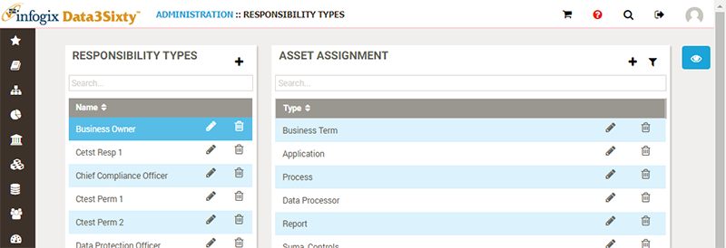
Creating responsibility types
Click the Add button to create a new Responsibility Type:
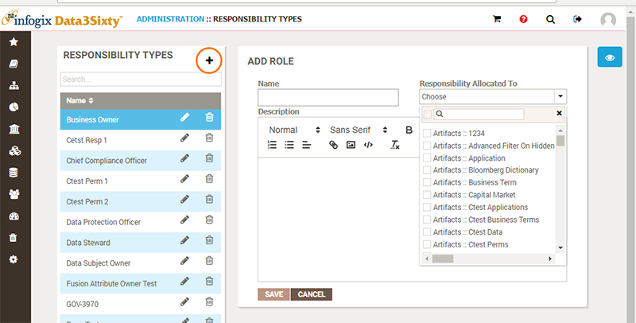
The Add Role panel appears, prompting for a Name and Description.
The Responsibility Allocated To drop down list allows you to choose multiple asset types to associate the responsibility to.
Click Save to create the new Responsibility Type.
You can also edit and delete responsibility types from the list on the left. Choosing edit will display the Edit Role panel for the chosen item:
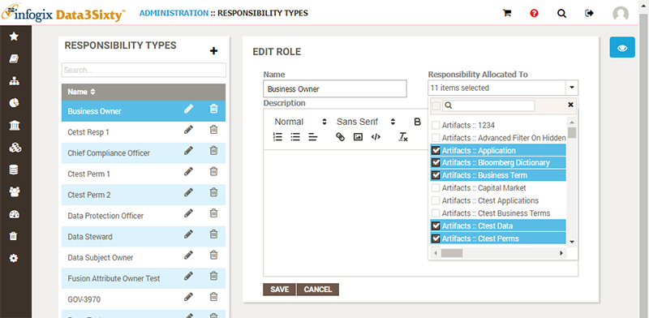
Asset assignment
The Asset Assignment list on the right shows the assets assigned to the currently selected Responsibility Type. You can add and remove new asset types to and from this list:
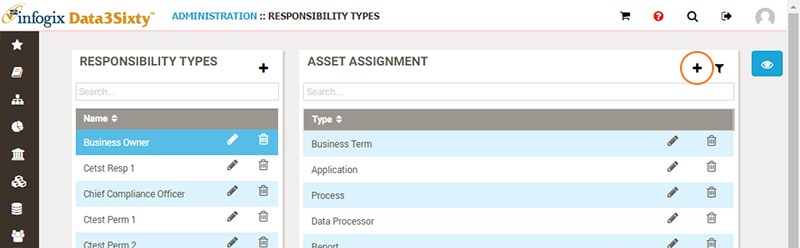
When you add a new asset assignment, the Add Responsibility Relation panel appears, allowing you to choose the permissions to grant for the chosen asset type:
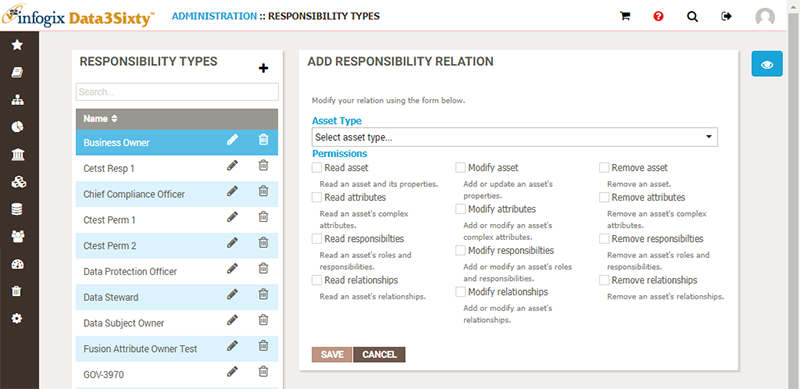
You can also edit existing items in the Asset Assignment list. The Edit Responsibility Relation panel will appear, allowing you to change the permissions granted for that asset type.
Ownership rules
Once a Responsibility Type has been defined, granting permissions to chosen asset types, it is then used in the Ownership views of assets to grant responsibilities to particular users and groups. For more details, please see the user guide topic Assigning ownership of assets.
You can also directly associate the Responsibility Type to particular assets and chosen users and groups via Ownership Rules:
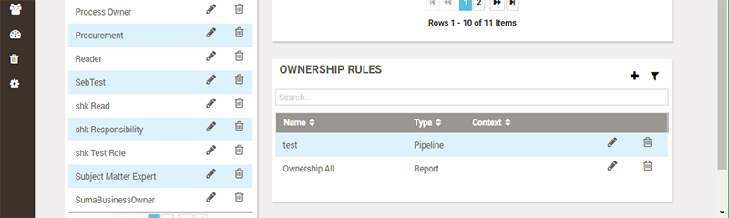
Upon choosing to add a new Ownership Rules, the Add Rule panel appears:
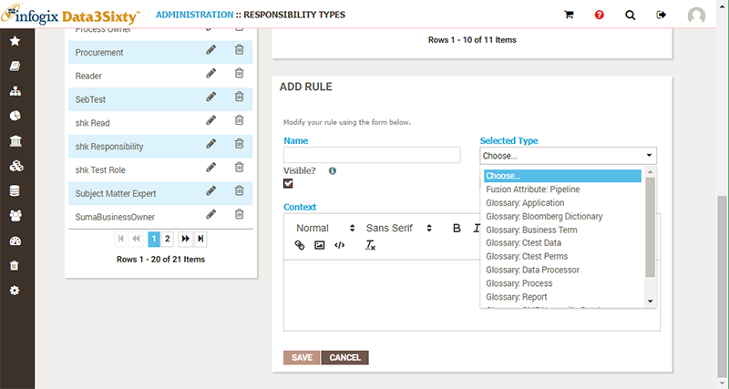
Provide a name for the rule and choose an asset type to relate it to.
You can uncheck the Visible option to hide the users and groups assigned to the responsibility via this rule from the Ownership view of affected assets.
You can check the option Applies to Entire Type? to have this rule apply to the asset type itself, rather than just the specific instances of the asset type, identified by given filters (see the topic Ownership rule filters below). This applies the rule to all instances of the chosen asset type, as well as granting the ability to create new instances of the type (e.g. granting users the ability to create new Business Terms).
Ownership rule filters
You can edit an Ownership Rule to modify the When Filters and Then Filters which determine which assets to affect, and which users and groups to grant the responsibility to:
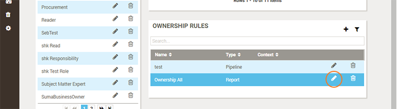
When filters
Use When Filters to narrow down the instances of the chosen asset type to apply the ownership rule to. You can leave this section unchanged to simply target all instances of the chosen asset type:
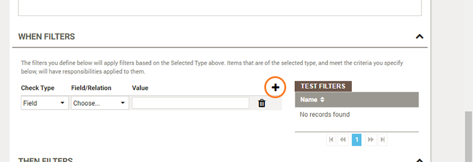
For example, you can choose to target only those Reports which relate to the Subject Area of Banking, as shown below:
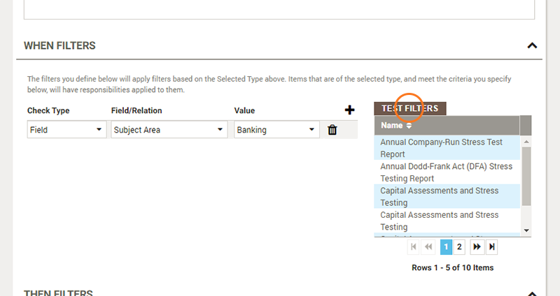
Click on the Test Filters button to update the list of assets which will be subject to this ownership rule, based on the When Filters defined.
Then filters
Use Then Filters to identify the users and groups to assign to the responsibility to:
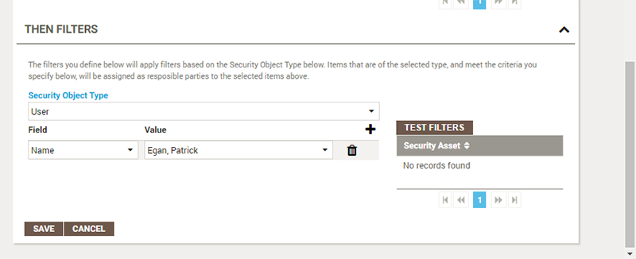
For each filter you choose from User, Group or Organization as the security asset to assign ownership to. You can then choose the Field to match and provide a Value. Most commonly you would choose the Name field and then choose a user or group from the value drop-down list.
Clicking on the Test Filters button will list the users and groups which will be granted the responsibility permissions upon the set of filtered assets.